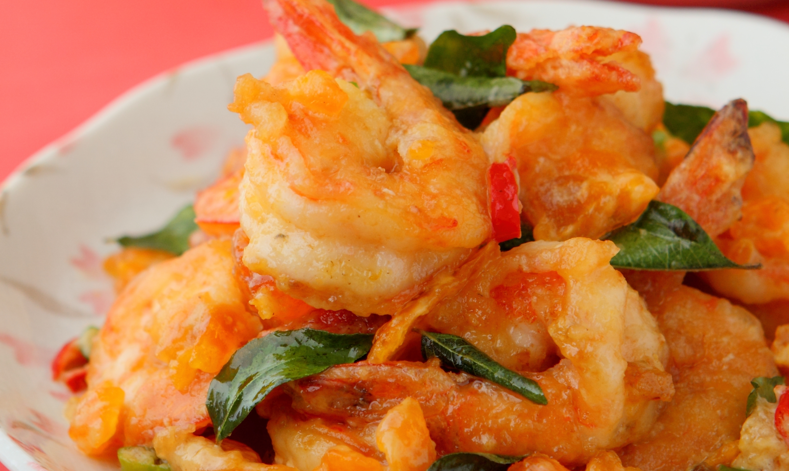

Salted Egg Shrimp

image grabbed from www.kuali.com
Description
Singapore-style Salted Egg Shrimp is easy on prep yet big on flavor! Cooked in salted egg yolks, milk, and spices, it's creamy, savory, and spicy seafood treat you'll love with steamed rice.
Ingredients
- 1 pound large shrimp
- 2 tablespoons butter
- 1 tablespoon oil
- 2 shallots, peeled and finely chopped
- 2 cloves garlic, peeled and minced
- 2 Thai chili peppers, stemmed and minced
- 1 cup evaporated milk
- 6 salted egg yolks, mashed
- ½ teaspoon sugar
- salt to taste
Steps
- Trim tendrils of shrimp and rinse under cold water. In a colander, drain very well.
- In a wide pan over medium heat, heat butter and oil.
- When butter begins to melt, Add shallots, garlic, and chili peppers. Cook, stirring regularly, for about 1 minute or until softened.
- Reduce heat, add evaporated milk, and bring to a simmer.
- Add salted egg yolks and continue to cook, mashing yolks with back of spoon, for about 1 minute or until slightly thickened.
- Add sugar and season with salt to taste.
- Add shrimp and cook, stirring occasionally, until color changes to pink and the sauce thickens.
- Remove from heat and serve hot.
Back to home